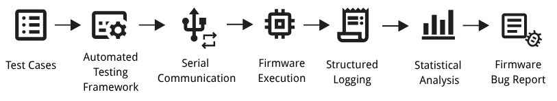

Worked as a Firmware Test Engineer Intern at Coherent, developing an automated testing system for an Optical Channel System (OCS). The project focused on improving firmware validation efficiency, test reliability, and system traceability.
Manual firmware testing was slow, inconsistent, and lacked structured logging, making it difficult to reproduce issues or analyze system behavior at scale.
The goal was to build an automated testing pipeline capable of large-scale execution, reliable communication, and post-test data analysis.

Designed a structured logging system to record all test inputs, device responses, timestamps, and execution status for full traceability.
Built analysis pipelines using pandas to compute response time statistics (mean, min, max) and execution success rates across test runs.
Python · pySerial · Pandas · Firmware Testing · Serial Communication · Data Logging